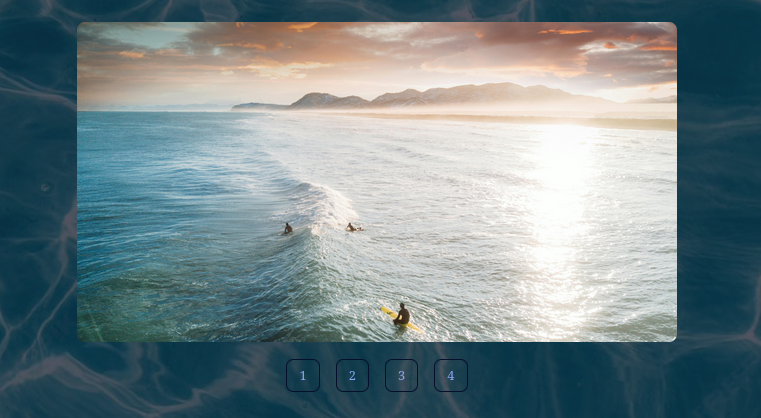

Se présenter sur Internet
Présentation de la SAÉ et Objectifs
Dans le cadre de notre formation au département R&T de l'IUT Grand Ouest Normandie (Campus de Caen), cette SAÉ individuelle nous demandait de concevoir et de déployer un site web multipages adaptatif (Responsive Design). L'objectif était de nous familiariser avec l'environnement de développement web professionnel en utilisant exclusivement les langages de base : HTML5 sémantique et CSS3.
La problématique principale consistait à créer une interface utilisateur fluide, esthétique et lisible, tout en respectant un cahier des charges technique très strict avant la date butoir du 19 décembre 2025 :
- Conception d'un site d'au moins 3 pages (Accueil visuelle, Page thématique riche, Page "À propos" de l'auteur).
- Conformité totale de la syntaxe aux normes du W3C.
- Application rigoureuse des normes d'accessibilité numérique (WCAG 2.0 AA) pour les lecteurs d'écran.
- Dépôt et versioning du projet sur l'infrastructure de l'IUT liée au module R1.15.
Apprentissages Critiques (AC) Concernés
Ce projet a permis de mobiliser et de valider directement les compétences suivantes :
- Mise en œuvre de l'AC13.01 : Utilisation d'un éditeur de code professionnel, gestion des architectures de fichiers locaux et transfert sécurisé des fichiers vers le serveur d'hébergement de l'IUT via les outils vus en R1.15.
- Mise en œuvre de l'AC13.04 : Structuration sémantique des documents (balises header, nav, section, footer), séparation stricte du fond (HTML) et de la forme (CSS), et configuration des requêtes médias (Media Queries) pour le responsive.
Tâches réalisées (Contribution personnelle)
En tant qu'unique développeuse sur ce projet, j'ai réalisé l'intégralité des étapes de production :
- Veille et choix de la thématique : Sélection du sujet "Le Surf" et collecte de contenus libres de droits adaptés à une intégration web.
- Maquettage et codage HTML : Rédaction d'un code propre et structuré, garantissant une bonne sémantique pour l'accessibilité.
- Design et intégration CSS : Création d'une charte graphique immersive (fonds marins, typographies soignées, boutons interactifs).
- Optimisation Responsive : Écriture des Media Queries pour assurer une transition parfaite des éléments entre les formats Écrans et Smartphones.
Résultats obtenus, Preuves et Traces
Le livrable final est un site Internet fonctionnel, fluide et totalement conforme aux attentes. Pour illustrer ce travail, voici deux captures d'écran de la production finale :

Figure 1 : Page d'accueil thématique avec intégration média et menu de navigation.

Figure 2 : Section interactive responsive et gestion des boutons de navigation.
Analyse Réflexive et Autoévaluation
Points forts : Une très bonne appropriation des règles de design et de l'accessibilité numérique. Le site est visuellement percutant et la navigation est intuitive.
Difficultés rencontrées et solutions : La principale contrainte a été d'harmoniser le rendu sur les écrans étroits sans rendre le contenu illisible (AC13.04). Pour résoudre cela, j’ai adopté une approche "Mobile-First", consistant à concevoir d'abord l'interface pour smartphone avant d’étendre progressivement les styles pour les ordinateurs de bureau.
Ce que cette SAÉ m'a appris : Ce projet m'a fait réaliser que le Web ne s'arrête pas au design visuel. L'accessibilité (permettre à un lecteur d'écran de naviguer aisément) et le respect des critères sémantiques stricts du W3C sont des composantes indispensables d’un produit fini professionnel.
Ce que j'aurais pu faire autrement : Si c'était à refaire, j'utiliserais la méthodologie CSS Grid de manière encore plus poussée pour centraliser la mise en page de la galerie et éviter certaines répétitions dans mon code.
Positionnement personnel : Je me positionne sur un niveau de Maîtrise Avancée pour cette compétence. Les concepts fondamentaux du HTML/CSS et l'intégration adaptative sont compris et appliqués avec rigueur.